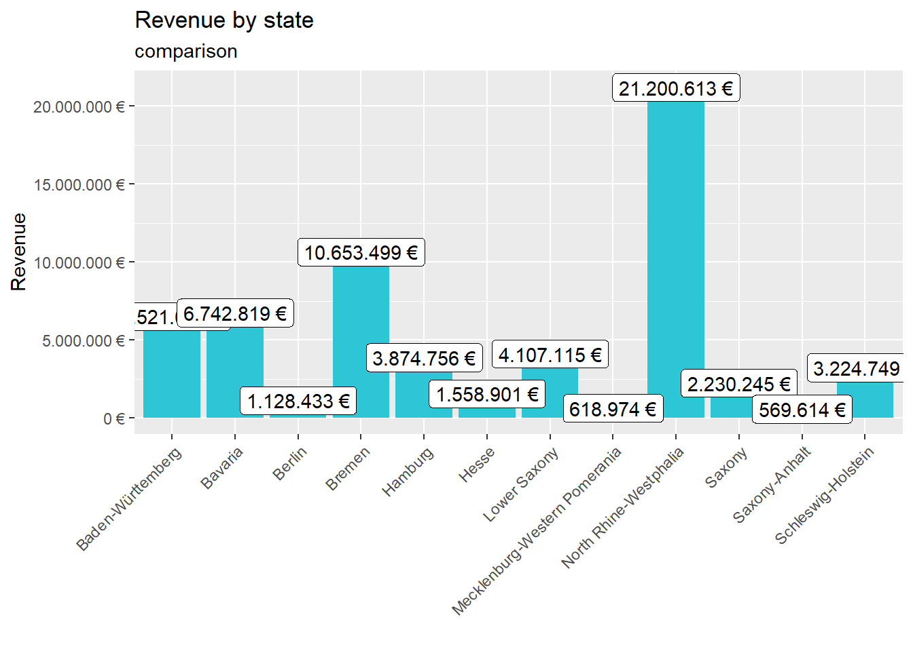

Last compiled: 2020-12-06
# 1.0 Load libraries ----
library(tidyverse)
library(readxl)
# 2.0 Importing Files ----
bikes_tbl <- read_excel(path = "00_data/01_bike_sales/01_raw_data/bikes.xlsx")
orderlines_tbl <- read_excel("00_data/01_bike_sales/01_raw_data/orderlines.xlsx")
bikeshops_tbl <- read_excel("00_data/01_bike_sales/01_raw_data/bikeshops.xlsx")
# 3.0 Examining Data ----
orderlines_tbl## # A tibble: 15,644 x 7
## ...1 order.id order.line order.date customer.id product.id quantity
## <chr> <dbl> <dbl> <dttm> <dbl> <dbl> <dbl>
## 1 1 1 1 2015-01-07 00:00:00 2 2681 1
## 2 2 1 2 2015-01-07 00:00:00 2 2411 1
## 3 3 2 1 2015-01-10 00:00:00 10 2629 1
## 4 4 2 2 2015-01-10 00:00:00 10 2137 1
## 5 5 3 1 2015-01-10 00:00:00 6 2367 1
## 6 6 3 2 2015-01-10 00:00:00 6 1973 1
## 7 7 3 3 2015-01-10 00:00:00 6 2422 1
## 8 8 3 4 2015-01-10 00:00:00 6 2655 1
## 9 9 3 5 2015-01-10 00:00:00 6 2247 1
## 10 10 4 1 2015-01-11 00:00:00 22 2408 1
## # ... with 15,634 more rowsglimpse(orderlines_tbl)## Rows: 15,644
## Columns: 7
## $ ...1 <chr> "1", "2", "3", "4", "5", "6", "7", "8", "9", "10", "11"...
## $ order.id <dbl> 1, 1, 2, 2, 3, 3, 3, 3, 3, 4, 5, 5, 5, 5, 6, 6, 6, 6, 7...
## $ order.line <dbl> 1, 2, 1, 2, 1, 2, 3, 4, 5, 1, 1, 2, 3, 4, 1, 2, 3, 4, 1...
## $ order.date <dttm> 2015-01-07, 2015-01-07, 2015-01-10, 2015-01-10, 2015-0...
## $ customer.id <dbl> 2, 2, 10, 10, 6, 6, 6, 6, 6, 22, 8, 8, 8, 8, 16, 16, 16...
## $ product.id <dbl> 2681, 2411, 2629, 2137, 2367, 1973, 2422, 2655, 2247, 2...
## $ quantity <dbl> 1, 1, 1, 1, 1, 1, 1, 1, 1, 1, 1, 2, 1, 1, 1, 1, 1, 1, 1...# 4.0 Joining Data ----
left_join(orderlines_tbl, bikes_tbl, by = c("product.id" = "bike.id"))## # A tibble: 15,644 x 15
## ...1 order.id order.line order.date customer.id product.id quantity
## <chr> <dbl> <dbl> <dttm> <dbl> <dbl> <dbl>
## 1 1 1 1 2015-01-07 00:00:00 2 2681 1
## 2 2 1 2 2015-01-07 00:00:00 2 2411 1
## 3 3 2 1 2015-01-10 00:00:00 10 2629 1
## 4 4 2 2 2015-01-10 00:00:00 10 2137 1
## 5 5 3 1 2015-01-10 00:00:00 6 2367 1
## 6 6 3 2 2015-01-10 00:00:00 6 1973 1
## 7 7 3 3 2015-01-10 00:00:00 6 2422 1
## 8 8 3 4 2015-01-10 00:00:00 6 2655 1
## 9 9 3 5 2015-01-10 00:00:00 6 2247 1
## 10 10 4 1 2015-01-11 00:00:00 22 2408 1
## # ... with 15,634 more rows, and 8 more variables: model <chr>,
## # model.year <dbl>, frame.material <chr>, weight <dbl>, price <dbl>,
## # category <chr>, gender <chr>, url <chr>bike_orderlines_joined_tbl <- orderlines_tbl %>%
left_join(bikes_tbl, by = c("product.id" = "bike.id")) %>%
left_join(bikeshops_tbl, by = c("customer.id" = "bikeshop.id"))
bike_orderlines_joined_tbl %>% glimpse()## Rows: 15,644
## Columns: 19
## $ ...1 <chr> "1", "2", "3", "4", "5", "6", "7", "8", "9", "10", "...
## $ order.id <dbl> 1, 1, 2, 2, 3, 3, 3, 3, 3, 4, 5, 5, 5, 5, 6, 6, 6, 6...
## $ order.line <dbl> 1, 2, 1, 2, 1, 2, 3, 4, 5, 1, 1, 2, 3, 4, 1, 2, 3, 4...
## $ order.date <dttm> 2015-01-07, 2015-01-07, 2015-01-10, 2015-01-10, 201...
## $ customer.id <dbl> 2, 2, 10, 10, 6, 6, 6, 6, 6, 22, 8, 8, 8, 8, 16, 16,...
## $ product.id <dbl> 2681, 2411, 2629, 2137, 2367, 1973, 2422, 2655, 2247...
## $ quantity <dbl> 1, 1, 1, 1, 1, 1, 1, 1, 1, 1, 1, 2, 1, 1, 1, 1, 1, 1...
## $ model <chr> "Spectral CF 7 WMN", "Ultimate CF SLX Disc 8.0 ETAP"...
## $ model.year <dbl> 2021, 2020, 2021, 2019, 2020, 2020, 2020, 2021, 2020...
## $ frame.material <chr> "carbon", "carbon", "carbon", "carbon", "aluminium",...
## $ weight <dbl> 13.80, 7.44, 14.06, 8.80, 11.50, 8.80, 8.20, 8.85, 1...
## $ price <dbl> 3119, 5359, 2729, 1749, 1219, 1359, 2529, 1559, 3899...
## $ category <chr> "Mountain - Trail - Spectral", "Road - Race - Ultima...
## $ gender <chr> "female", "unisex", "unisex", "unisex", "unisex", "u...
## $ url <chr> "https://www.canyon.com/en-de/mountain-bikes/trail-b...
## $ name <chr> "AlexandeRad", "AlexandeRad", "WITT-RAD", "WITT-RAD"...
## $ location <chr> "Hamburg, Hamburg", "Hamburg, Hamburg", "Bremen, Bre...
## $ lat <dbl> 53.57532, 53.57532, 53.07379, 53.07379, 48.78234, 48...
## $ lng <dbl> 10.015340, 10.015340, 8.826754, 8.826754, 9.180819, ...# 5.0 Wrangling Data ----
challenge_bike_orderlines_wrangled_tbl <- bike_orderlines_joined_tbl %>%
separate(col = location,
into = c("city", "state"),
sep = ", ") %>%
mutate(total.price = price * quantity) %>%
select(-...1, -gender) %>%
select(-ends_with(".id")) %>%
bind_cols(bike_orderlines_joined_tbl %>% select(order.id)) %>%
select(order.id, contains("order"), contains("model"), contains("category"),
price, quantity, total.price,state,city,
everything()) %>%
rename(bikeshop = name) %>%
set_names(names(.) %>% str_replace_all("\\.", "_"))
# 6.0 Business Insights ----
# 6.1 Sales by state ----
# Step 1 - Manipulate
library(lubridate)
sales_by_state_tbl <- challenge_bike_orderlines_wrangled_tbl %>%
select(state, total_price) %>%
group_by(state) %>%
summarize(sales = sum(total_price))%>%
mutate(sales_text = scales::dollar(sales, big.mark = ".",
decimal.mark = ",",
prefix = "",
suffix = " €"))
# Step 2 - Visualize
sales_by_state_tbl %>%
ggplot(aes(x = state, y = sales)) +
geom_col(fill = "#2DC6D6") + # Use geom_col for a bar plot
geom_label(aes(label = sales_text)) + # Adding labels to the bars
geom_smooth(method = "lm", se = FALSE) + # Adding a trendline
theme(axis.text.x = element_text(angle = 45, hjust = 1))+
scale_y_continuous(labels = scales::dollar_format(big.mark = ".",
decimal.mark = ",",
prefix = "",
suffix = " €")) +
labs(
title = "Revenue by state",
subtitle = "comparison",
x = "", # Override defaults for x and y
y = "Revenue"
)
# 6.2 Sales by Year and state ----
# Step 1 - Manipulate
sales_by_year_state_tbl <- challenge_bike_orderlines_wrangled_tbl %>%
select(order_date, total_price, state) %>%
mutate(year = year(order_date)) %>%
group_by(year, state) %>%
summarise(sales = sum(total_price)) %>%
ungroup() %>%
mutate(sales_text = scales::dollar(sales, big.mark = ".",
decimal.mark = ",",
prefix = "",
suffix = " €"))
# Step 2 - Visualize
sales_by_year_state_tbl %>%
# Set up x, y, fill
ggplot(aes(x = year, y = sales, fill = state)) +
# Geometries
geom_col() + # Run up to here to get a stacked bar plot
# Facet
facet_wrap(~ state) +
# Formatting
scale_y_continuous(labels = scales::dollar_format(big.mark = ".",
decimal.mark = ",",
prefix = "",
suffix = " €")) +
labs(
title = "Revenue by year and state",
subtitle = "A comparison",
fill = "Main category" # Changes the legend name
) library(tidyverse)
library(httr)
library(jsonlite)
url= "https://www.europeana.eu/api/v2/search.json?wskey=YOUR_API_KEY&query=London"
resp <- GET(url)
rawToChar(resp$content)## [1] "{\"apikey\":\"YOUR_API_KEY\",\"success\":false,\"error\":\"API key doesn't exist\",\"code\":\"401-AX\"}"resp %>%
.$content %>%
rawToChar() %>%
fromJSON()## $apikey
## [1] "YOUR_API_KEY"
##
## $success
## [1] FALSE
##
## $error
## [1] "API key doesn't exist"
##
## $code
## [1] "401-AX"library(tidyverse)
library(dplyr)
library(glue)
library(jsonlite)
library(rvest)
library(stringi)
library(xopen)
url <- "https://www.rosebikes.de/fahrr%C3%A4der/mtb"
rose_html <- url %>%
read_html()
names <- rose_html %>%
html_nodes(css = ".catalog-category-bikes__title-text") %>%
html_text() %>%
str_extract("(?<= ).*(?=)") %>%
as_tibble()
names## # A tibble: 9 x 1
## value
## <chr>
## 1 CONTROL
## 2 MILLER
## 3 PEAK
## 4 BRUCE
## 5 SOLO
## 6 PATH
## 7 HILL
## 8 HILL TRAIL
## 9 FIREprice <- rose_html %>%
html_nodes(css = ".catalog-category-bikes__price-title") %>%
html_text() %>%
str_extract("(?<= ).*(?=)") %>%
as_tibble()
price## # A tibble: 9 x 1
## value
## <chr>
## 1 1.699,00 €
## 2 1.999,00 €
## 3 3.099,00 €
## 4 <NA>
## 5 <NA>
## 6 1.849,00 €
## 7 2.599,00 €
## 8 2.899,00 €
## 9 2.149,00 €tibble(Bike_Model = names, Bike_price = price)## # A tibble: 9 x 2
## Bike_Model$value Bike_price$value
## <chr> <chr>
## 1 CONTROL 1.699,00 €
## 2 MILLER 1.999,00 €
## 3 PEAK 3.099,00 €
## 4 BRUCE <NA>
## 5 SOLO <NA>
## 6 PATH 1.849,00 €
## 7 HILL 2.599,00 €
## 8 HILL TRAIL 2.899,00 €
## 9 FIRE 2.149,00 €library(tidyverse)
library(data.table)
library(ggplot2)
library(vroom)
library(lubridate)
library(maps)
library(tictoc)
library(scales)covid_data_tbl <- read_csv("https://opendata.ecdc.europa.eu/covid19/casedistribution/csv")
covid_data <- covid_data_tbl %>%
select(dateRep, cases, countriesAndTerritories)
covid_data_countries_month <- covid_data %>%
filter(countriesAndTerritories %in% c("Germany",
"United_Kingdom",
"France",
"Spain",
"United_States_of_America")) %>%
mutate(date = lubridate::dmy(dateRep)) %>%
group_by(countriesAndTerritories, date) %>%
summarize(cumulative_cases = cumsum(cases)) %>%
ungroup()
covid_data_countries_month %>%
ggplot()+
geom_line(aes(x = date, y = cumulative_cases, color = countriesAndTerritories))+
labs(title = " Covid-19 confirmed cases worldwide",
x = "Year 2020",
y = "Cumulative Cases"
)world <- map_data("world")
covid_mortality_tbl <- covid_data_tbl %>%
mutate(across(countriesAndTerritories, str_replace_all, "_", " ")) %>%
mutate(countriesAndTerritories = case_when(
countriesAndTerritories == "United Kingdom" ~ "UK",
countriesAndTerritories == "United States of America" ~ "USA",
countriesAndTerritories == "Czechia" ~ "Czech Republic",
TRUE ~ countriesAndTerritories
))%>%
group_by(countriesAndTerritories, popData2019, deaths) %>%
summarise(total_population = max(popData2019))%>%
summarise(total_deaths = sum(deaths))%>%
summarise(mortality = (total_deaths)/(popData2019))
class(covid_mortality_tbl)## [1] "tbl_df" "tbl" "data.frame"setDT(covid_mortality_tbl)
class(covid_mortality_tbl)## [1] "data.table" "data.frame"covid_mortality_tbl %>% glimpse()## Rows: 214
## Columns: 2
## $ countriesAndTerritories <chr> "Afghanistan", "Albania", "Algeria", "Andor...
## $ mortality <dbl> 1.955746e-05, 6.637724e-05, 9.476680e-06, 2...setDT(world)
world %>% glimpse()## Rows: 99,338
## Columns: 6
## $ long <dbl> -69.89912, -69.89571, -69.94219, -70.00415, -70.06612, -7...
## $ lat <dbl> 12.45200, 12.42300, 12.43853, 12.50049, 12.54697, 12.5970...
## $ group <dbl> 1, 1, 1, 1, 1, 1, 1, 1, 1, 1, 2, 2, 2, 2, 2, 2, 2, 2, 2, ...
## $ order <int> 1, 2, 3, 4, 5, 6, 7, 8, 9, 10, 12, 13, 14, 15, 16, 17, 18...
## $ region <chr> "Aruba", "Aruba", "Aruba", "Aruba", "Aruba", "Aruba", "Ar...
## $ subregion <chr> NA, NA, NA, NA, NA, NA, NA, NA, NA, NA, NA, NA, NA, NA, N...tic()
covid_map_tbl <- merge(x = world, y = covid_mortality_tbl,
by.x = "region", by.y = "countriesAndTerritories",
all.x = TRUE,
all.y = FALSE)
toc()## 0.02 sec elapsedcovid_map_tbl%>% glimpse()## Rows: 99,338
## Columns: 7
## $ region <chr> "Afghanistan", "Afghanistan", "Afghanistan", "Afghanistan...
## $ long <dbl> 74.89131, 74.84023, 74.76738, 74.73896, 74.72666, 74.6689...
## $ lat <dbl> 37.23164, 37.22505, 37.24917, 37.28564, 37.29072, 37.2667...
## $ group <dbl> 2, 2, 2, 2, 2, 2, 2, 2, 2, 2, 2, 2, 2, 2, 2, 2, 2, 2, 2, ...
## $ order <int> 12, 13, 14, 15, 16, 17, 18, 19, 20, 21, 22, 23, 24, 25, 2...
## $ subregion <chr> NA, NA, NA, NA, NA, NA, NA, NA, NA, NA, NA, NA, NA, NA, N...
## $ mortality <dbl> 1.955746e-05, 1.955746e-05, 1.955746e-05, 1.955746e-05, 1...setkey(covid_map_tbl, "region")
key(covid_map_tbl)## [1] "region"?setorder(region, -mortality, long, lat)
setorderv(covid_map_tbl, c("mortality", "region", "long", "lat"), order = -1)
covid_map_tbl%>%
ggplot() +
geom_map(aes(x = long, y = lat, map_id = region, fill = mortality),map = world) +
scale_fill_continuous(labels = scales::percent)+
labs(title = "Confirmed Covid19 deaths compared to the population size ",
subtitle = "More than 1.2 Million confirmed Covid19 deaths worldwide")